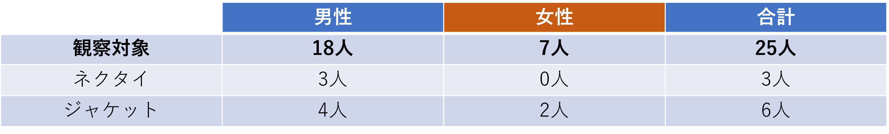

移動観察
移動観察～スーツを着ている人～
- 移動観察
※紫の星は神奈川大学
【観察場所】上の図、赤い矢印のある場所
【観察内容】スーツ着用者を対象にネクタイを着用している人、ジャケットを着ている人を観察した
【結果】

【考察】
スーツを着ている人は男性が多いことが分かる。私の主観ではあるが、女性はオフィスカジュアルな服装が多く、スーツを着ている人は少ない印象であった。
逆に、働いていると思われる男性はほとんどがスーツを着ていた。
男性は会社でカジュアルな恰好をしずらく、それに対して女性は男性に比べてフォーマルな服装を求められない風潮があると考える。
その理由として、昔「女性はコピーにお茶くみ、男性が中心」の会社であった名残があるではないかと思う。
男性はフォーマルな場に対応するためスーツの着用を強いられ、女性は脇役であったため、カジュアルな服装を許されたのではないかということだ。
このことについてインターネットで検索してみると、男女の服装規定の差に不満を持つ人やそれを改善しようとする会社があった。
僕は私服で会社に行くまで10年かかった。
なぜ男性だけスーツを着なければならないのか？
KDDIが社員の服装規定を廃止。｢男性だからスーツ｣の固定観念を見直し
服装規定に男女差は見られるものの、女性は以前よりも大きく社会進出してきている。服装規定もそれに追いつくように変わっていくかもしれない。
女性の社会進出により服装規定に違和感がでてきたということだ。
10年後、同じ観察をしてみたいと思った。
次に、ネクタイをしている人は全体の1割弱で、全員男性であった。
クールビズでない時期のため、意外と少ないと感じた。
女性はフォーマルな恰好であってもネクタイはしないため、女性のネクタイ着用者が0人であることは納得できる。
最後に、男性は約22%、女性は約29%（小数点以下四捨五入）がジャケットを着用していた。
当時の正確な気温は分からないが、観察日の最高気温は19℃、最低気温は14℃と肌寒い気温であったため、ジャケット着用者の少なさに驚いた。
観察地周辺にはオフィスと商業施設が近くにあるため、短距離での移動だったのかもしれない。
- 定点観察
定点観察の結果も参考として載せておく
【観察場所】上の図、赤い矢印のある場所